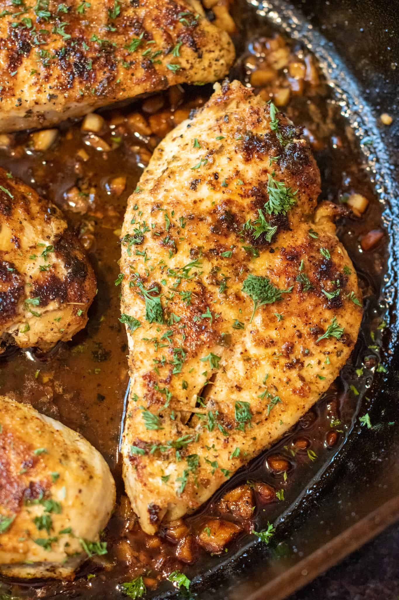

Garlic buttered chicken

Description
The chicken is pan-fried on the stove-top and is so tender,
juicy, rich and buttery tasting with
plenty of garlic to provide that extra punch of flavor.
Serve this chicken with rice on the side or a nice salad,
and you've got yourself a winning chicken dinner.
Ingredients needed
- OLive oil
- Boneless chicken breast
- Poultry seasoning
- Salt
- Pepper
- White wine or chicken broth
- Butter
- Garlic
Steps
- To a large skillet, add olive oil, chicken breasts seasoned
with 21 Salute Seasoning, salt,
pepper, and sear on the first side for about 5 minutes.
- Flip chicken oven and cook on the second side for about 5 minutes.
- When the chicken is done and cooked through, remove it from the
pan and allow it to rest on a plate.
- Deglaze your pan with a splash of wine, add the butter, garlic, and cook for
one minute, or until the butter has melted and the garlic is
fragrant.
- Return the chicken to the pan, toss it in the garlic butter
sauce, garnish with parsley, and serve.